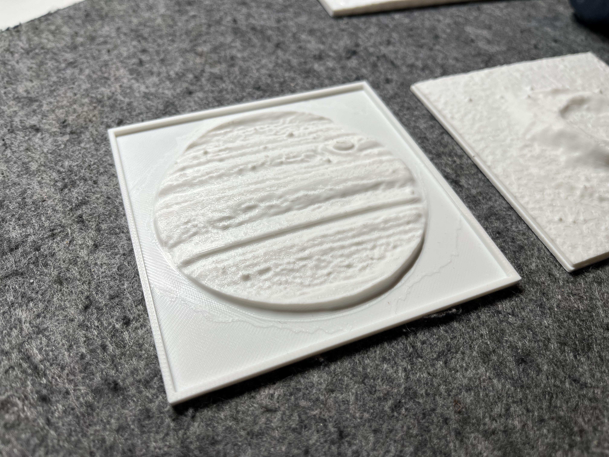

Tactile Data

Tactile JWST Jupiter (MIRI)
A high-resolution tactile relief of Jupiter's cloud bands and Great Red Spot, derived directly from James Webb Space Telescope MIRI data.
FITS to 3D
~4h Print